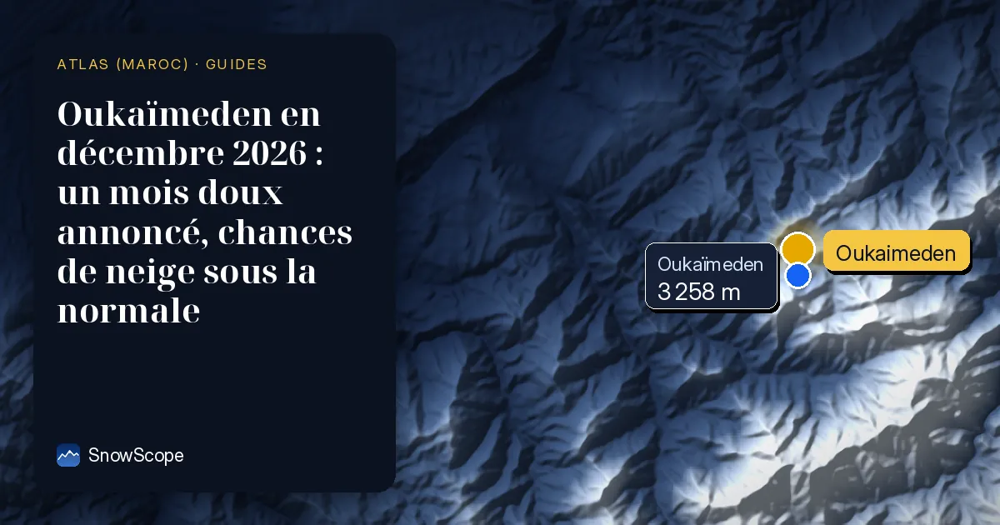
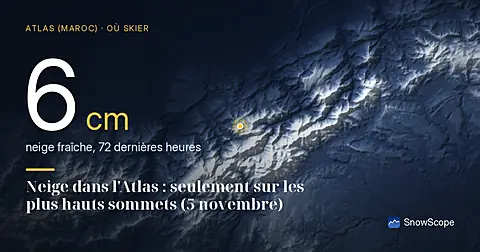

Oukaïmeden en décembre 2026 : un mois doux annoncé, chances de neige sous la normale
Oukaimeden se présente dénudée le 10 novembre. Les 6 cm tombés au sommet la semaine passée ont disparu, et la semaine à venir n'apporte pas de neige fraîche. Les prévisions saisonnières pour décembre affichent un decidément chaud sur le Haut Atlas, ce qui réduit fortement les chances de neige.
Consultez les prévisions neige en temps réel pour Oukaimeden sur l'application SnowScopeHauteurs de neige, alertes poudreuse et carte 3D, gratuitement.

Pas de neige au sol en ce moment
La carte montre 0 cm partout : la base à 2 600 m, mi-montagne à 2 930 m, et le sommet à 3 260 m. Seulement 1 % du terrain dans les 60 km affiche du blanc. Nous affichons la montagne dénudée à la place—les hautes crêtes du Toubkal où la neige s'accroche en premier quand l'hiver arrive—pour que vous voyiez où surveiller l'ouverture de la saison.
La semaine passée a apporté 1 cm à mi-hauteur et 6 cm au sommet, mais aucun n'a tenu. Les sept prochains jours ne montrent pas de neige prévue à aucune altitude.
Perspectives décembrales : plus chaud que la normale, neige plus rare
La carte SnowScope compare les montagnes du Haut Atlas autour d'Oukaimeden avec leur propre historique. Sur la région, 95 % de la surface affiche un signal de neige décembral plus maigre—moins d'endroits que d'habitude captureront des accumulations significatives. Aucune des 55 cellules de grille montagnarde ne pointe vers des perspectives plus enneigées.
La chance de neige nouvelle au-dessus de la moyenne décembrale varie de 29 % à 43 % sur la chaîne. Cela signifie à peu près une chance sur trois, au mieux, que ce mois soit plus humide que les décembres passés.

Ce que décembre apporte généralement, et ce que cela ressemble cette année
En décembre typique, les pentes hautes d'Oukaimeden autour de 3 200 m reçoivent 41 cm de neige fraîche et en conservent 26 cm au sol le dernier jour du mois. Les perspectives pour cette année : 37 cm de neige fraîche mais seulement 13 cm restants le 31 décembre. L'éventail d'incertitude est large : entre 0 et 29 cm est la bande la plus probable. La chance que la neige soit plus profonde qu'à l'habitude en fin de mois s'élève à seulement 26 %.
La chaleur est le facteur déterminant. Les décembres passés que cette prévision ressemble le plus sont 2010, 2023 et 1989—des années où les tempêtes atlantiques ont été rares et l'air décembral a retenu plus de chaleur que de froid. Dans de tels mois, la neige qui tombe fond rapidement sous le soleil d'hiver fort sur la roche nue, surtout aux altitudes plus basses.


Le système saisonnier européen : chaleur quasi certaine, signaux mitigés sur la pluie
Les 51 simulations de la principale prévision saisonnière de l'Europe s'accordent frappamment sur un point. Quatre-vingt-quatorze pour cent d'entre elles prédisent un décembre plus chaud que la moyenne 1993-2016, avec un réchauffement moyen de 2,2 °C sur le Haut Atlas. Un tel consensus sur la chaleur survient rarement.
Les signaux de précipitations divisent les prévisions. Cinquante et un pour cent prédisent un mois plus humide qu'à l'habitude ; 49 % en prédisent un plus sec. En moyenne, la prévision ajoute 11 % aux 33 mm typiques d'un décembre—un léger surplus. Pourtant, dans ces montagnes, la température importe plus que les précipitations totales. La neige répond étroitement à ce qui tombe (corrélation 0,91 avec les précipitations) mais perd du terrain face à la chaleur. Quelques degrés de chaleur supplémentaire transforment les précipitations tombantes en pluie sur les pentes basses et accélèrent la fonte sur les hauts sommets.

Quand surveiller, et où la neige persiste le plus longtemps
Une tempête atlantique peut encore inverser le tableau mensuel en quelques jours, donc les perspectives décembrales représentent un changement dans les probabilités, pas une prévision figée. Les tempêtes décembrales sont rares dans l'Atlas, mais pas impossibles. Quand l'une arrive—avec de l'air froid en altitude et des précipitations organisées—les pentes les plus hautes d'Oukaimeden deviennent blanches rapidement.
Si la neige tombe, le sommet (au-dessus de 3 200 m) la conserve le plus longtemps car l'air reste plus froid en altitude et l'angle du soleil est plus bas. Les pentes mi-montagne et la base perdent l'accumulation en quelques jours une fois qu'un redoux revient. C'est pourquoi la neige de début de saison à Oukaimeden est une fenêtre, pas une base.
Conseils aux skieurs
- Vérifiez la prévision des tempêtes 7 jours avant de planifier une visite début décembre. Un seul système atlantique peut apporter de la neige aux pentes hautes même dans un mois chaud.
- Si la neige arrive, skiez ou randonnez sur le terrain le plus haut (au-dessus de 3 200 m) dans les 48 heures suivant la tempête ; les altitudes plus basses seront dénudées en quelques jours.
- Prévoyez des couches : décembre dans l'Atlas oscille entre des après-midis chauds et des nuits froides, et les pentes ensoleillées peuvent sembler printanières même à 3 000 m.
- Pour la randonnée au-dessus de 3 000 m, emportez des chaussures de rocher ou des crampons ; attendez-vous surtout à un terrain dénudé en décembre 2026 et à de la glace soudaine où l'eau de fonte regèle la nuit.
- Avant de partir hors-piste après une rare chute de neige décembrale, consultez le bulletin officiel des avalanches pour la région du Haut Atlas.
À propos de ces chiffres
Les hauteurs de neige des stations sont la neige la plus épaisse sur le haut du domaine à la date indiquée ; ce sont des estimations pour une zone, pas une mesure en un point. Les prévisions peuvent changer. Consultez toujours le bulletin d'avalanche officiel avant le hors-piste.
Citer ce bulletin
Pour la recherche, l'enseignement ou la presse : chiffres et graphiques réutilisables librement sous CC BY 4.0 avec cette citation.
SnowScope (2026), Oukaïmeden en décembre 2026 : un mois doux annoncé, chances de neige sous la normale, https://snowscope.app/blog/fr/2026/11/oukaimeden-december-2026-snow-outlook.html, consulté le 2026-11-10
SnowScope (Atlas Labs). (2026, November 10). Oukaïmeden en décembre 2026 : un mois doux annoncé, chances de neige sous la normale. SnowScope snow reports. https://snowscope.app/blog/fr/2026/11/oukaimeden-december-2026-snow-outlook.html
BibTeX
@misc{snowscope2026oukaimedendecember2026sn,
author = {{SnowScope (Atlas Labs)}},
title = {Oukaïmeden en décembre 2026 : un mois doux annoncé, chances de neige sous la normale},
year = {2026},
month = nov,
howpublished = {\url{https://snowscope.app/blog/fr/2026/11/oukaimeden-december-2026-snow-outlook.html}},
note = {Published 2026-11-10 09:30 UTC; accessed 2026-11-10}
}· CC BY 4.0 · Méthodes, données et outils →
Suivre Oukaimeden
Gratuit : un message quand la neige arrive, et la météo chaque matin.
Autres bulletins neige

L'Atlas n'a de la neige que au-dessus de 3 000 m aujourd'hui : 60 km² sur les terres les plus élevées, avec 11 cm au maximum. Pas de neige sur les trois stations de ski.

La neige se retire vers les plus hauts sommets de l'Atlas. Les trois stations de ski n'ont pas de neige aujourd'hui ; 40 km² de crêtes restent blanches. D'autres fonte en perspective.

Environ 65 mm sur le Toubkal d'ici le 12 novembre, mais l'isotherme 0 °C reste vers 4 000 m : pluie à Oukaïmeden et dans les vallées, neige au sommet seulement.